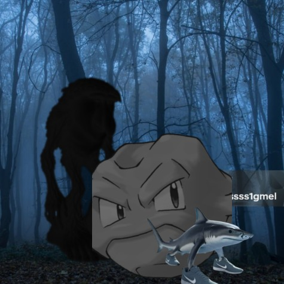

Capitulo 4, Perdido en el bosque

---- HAS MUERTO ----
Decides esconderte en la roca, te das cuenta de que es un geodude sin brazos, oyes unos pasos a lo lejos, pero no te atreves a comprobar si son buenos o malos, cuando dejas de fijarte en ese sonido, ya es demasiado tarde, te giras y tienes a la bestia detrás tuya, el geodude te observa, con cara de pena, no quiere que este sea tu final, pero no tiene brazos y no puede defenderte, gg.